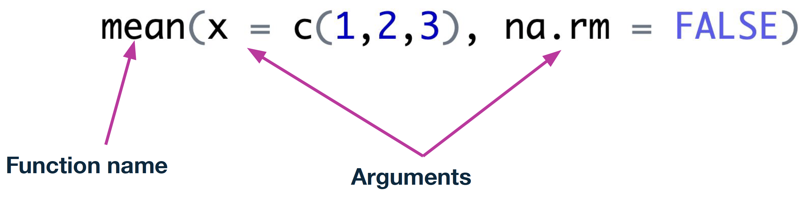

x <- 1 # Preferred way
x = 1
1 -> x
print(x)[1] 1Part 1
January 26, 2026
Natalie Gill
Bioinformatician II
What is your level of experience with coding/data analysis?
Keep at it—progress comes with persistence!


.R
.RmdR code with Markdown for text formatting.Rmd file in RStudio to explore the basics of how they work:See this article for more common errors and how to fix them.
Which variable name is not valid in R?
Which of these is not the correct data type for the value?

What is the output of the following code?
What is the output of the following code?

What does this function do?
Experimental Design and Hypothesis Testing Using R
February 2 - February 3, 2026 1:00-3:00pm PST
Introduction to RNA-Seq Analysis
February 12 - February 13, 2026 1:00-3:00pm PST